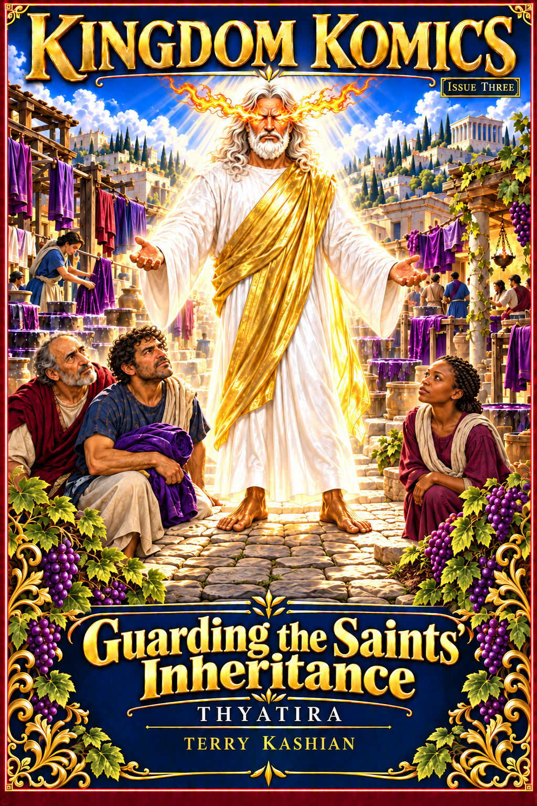

Explore Scripture through illustrated stories and conversations that keep Christ at the center.

Kingdom Komics · Issue Three
Guarding the Saints’ Inheritance
Thyatira · Revelation 2:18–29
By Terry Kashian
What happens when faithfulness to Christ threatens your livelihood—and compromise promises security?
An inheritance worth guarding
In Thyatira, a craftsman faces the cost of refusing an idol’s feast, while the elders confront the consequences of their silence. The account of Naboth’s vineyard brings their struggle into focus: an inheritance entrusted by God must not be surrendered for the promise of comfort or acceptance.
Christ’s searching eyes, His call to repentance, and His promises to those who overcome unfold through vivid artwork and meaningful dialogue. Presented from a fulfilled (preterist) perspective, this issue follows the saints as they learn to share one another’s burdens and guard what Christ has given them.
21 full-color interior pages + cover · 22-page digital PDF
The journey through Revelation continues in two cities where allegiance to Jesus touches work, family, fellowship, and life itself.
See Christ through the life of His people
In Smyrna, a struggling household shares what little it has and hears the promise of the One who died and came to life. In Pergamum, believers face pressure to join pagan worship and surrender their voice to controlling teachers. Christ’s word exposes their choices and calls the whole assembly to live from His life.
The crown of life, the sword, and the hidden manna unfold through ordinary people’s conversations and choices. Written from a fulfilled (preterist) perspective, this issue invites readers to see Jesus Christ together and live in His revelation.
20 full-color story pages + cover and reader notes · 22-page digital PDF
Written from a fulfilled (preterist) perspective, Kingdom Komics explores Revelation within its first-century historical and covenantal setting. Vivid illustrations and thoughtful conversations bring its message to life, keeping Christ, His finished work, and His people at the center.
Issue 1 begins the journey
Discover Revelation’s foundation, John’s vision of the glorified Christ, and His message to the assembly in Ephesus. Follow their conversations as they consider their calling to shine as a lampstand, recognize every member’s place in Christ’s Body, and return to their first and best love.
20 full-color story pages plus cover · 21-page digital PDF
Secure checkout through Payhip. Download your complete PDF after purchase. $5 includes Issue 1; future issues will be offered separately.
A journey through the whole Book of Revelation
This is the beginning of a continuing series planned to explore the entire Book of Revelation—from John’s opening vision of the glorified Christ to the New Jerusalem and the river of life. Future issues will continue through the remaining churches and the rest of Revelation, building toward a complete illustrated series.
Read a little of Issue 1
Preview story pages 13 and 14. Select a page to open it full size.